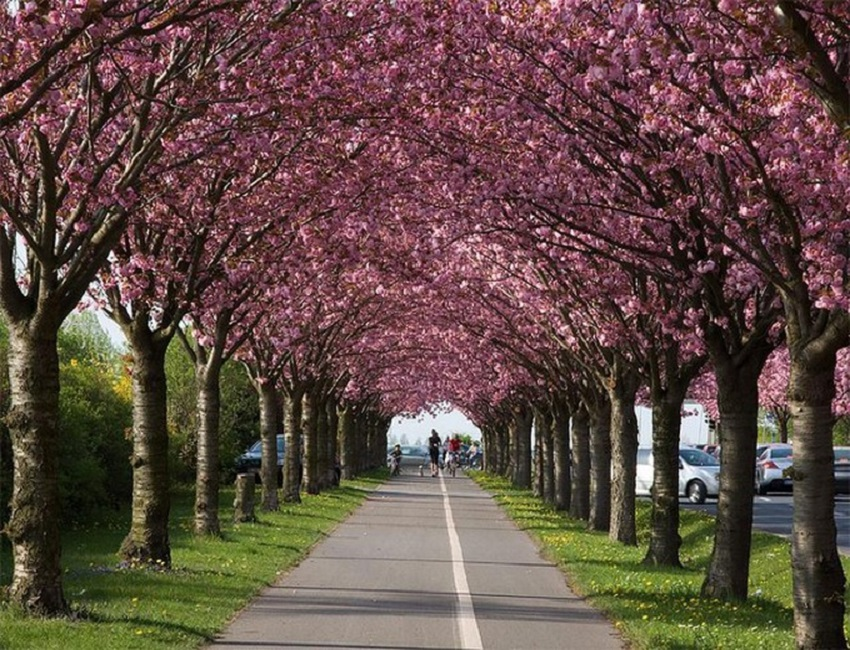
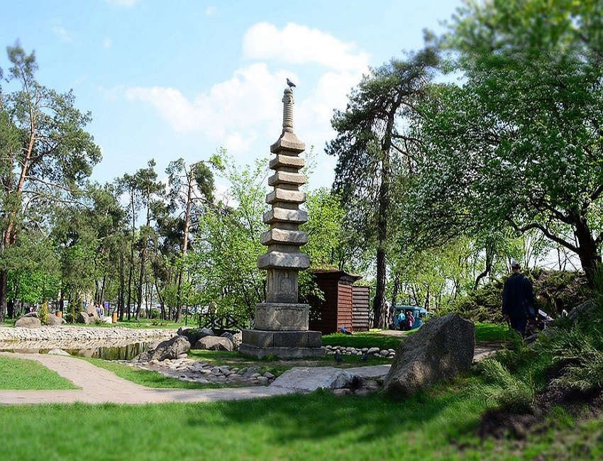
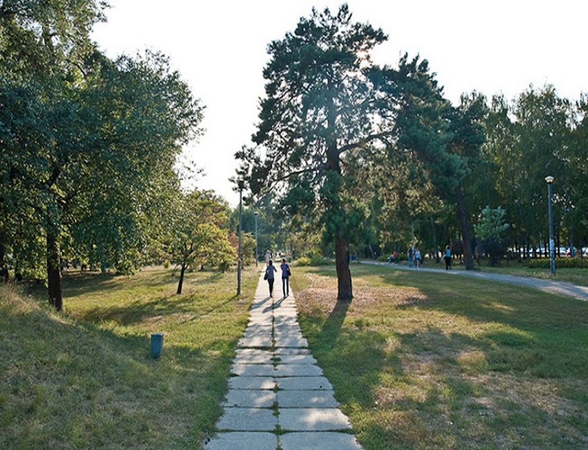
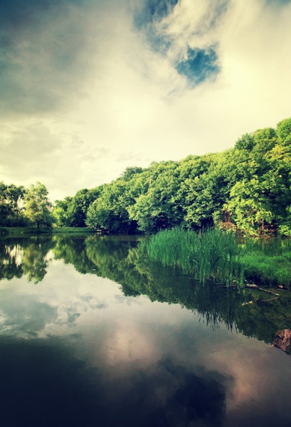
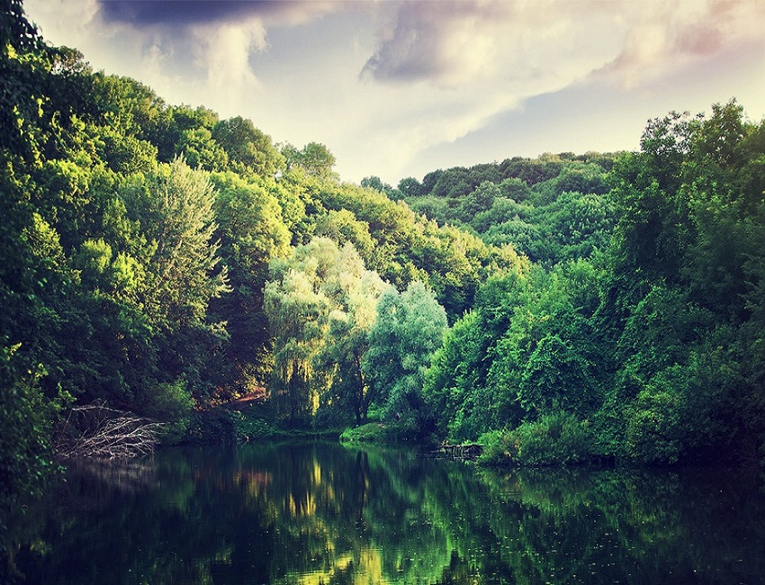
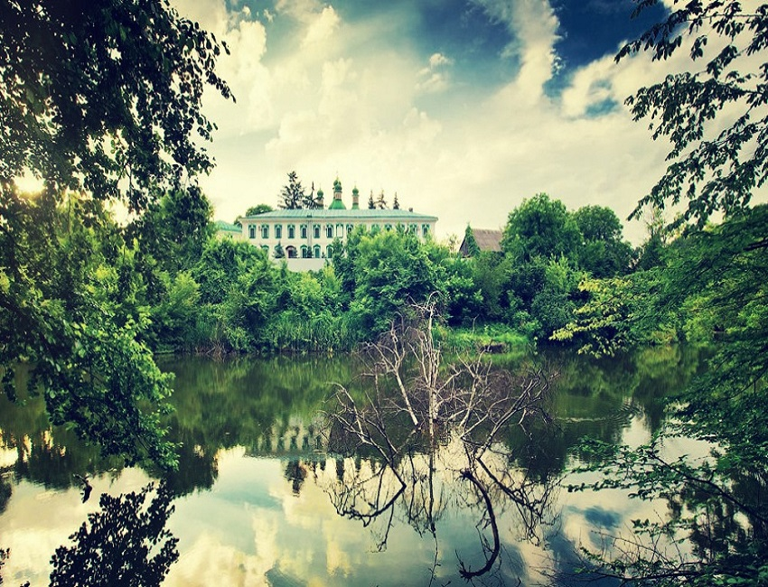
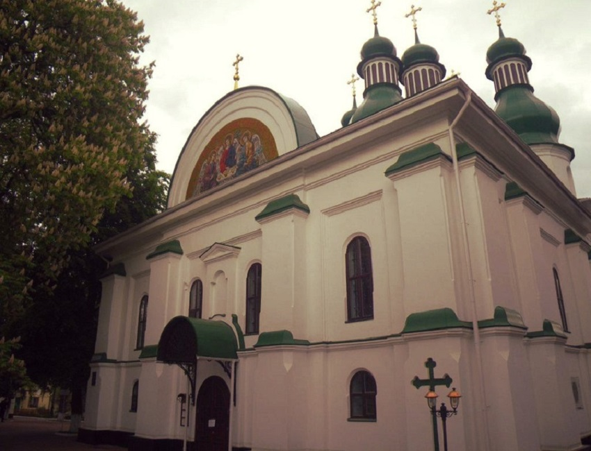

Китаево
Лесистые приднепровские холмы окружают зеленый городок на карте Киева — Китаево. Залив Днепра образует полуостров, на котором и располагается уголок натуральной природы, природы во всей красе. Территория Китаево насчитывает три небольших пруда, которые называются Китаевскими. Среди живописных каскадов приятно находиться даже зимой. Китай-гора известна своим историческим прошлым.Когда-то здесь были рвы, валы и крепость, остатки которой можно увидеть и сегодня. В середине пятнадцатого столетия монахами Киево-Печерской Лавры был основан пещерный монастырь с наземным лаврским скитом. На стенах пещер в начале двадцатого века были обнаружены надписи на старославянском языке. Архитектор С. Д. Ковнир в 1767 году разработал и воплотил в жизнь проект строительства Троицкой церкви, которая сохранилась и по сей день.
Во времена Второй мировой войны Китаево стало крепостью, местом кровопролитных военных действий. Участие принимала 147 стрелковая дивизия во главе с подполковником С. К. Потехиным. Достаточно большая историческая часть была разрушена. Сейчас в монастырях возобновлено церковное служение, восстановлен каменный престол у храма, который выполнен, кстати, в стиле украинского барокко. Находится Китаево в одном из самых зеленых районов Киева — Голосеево.



